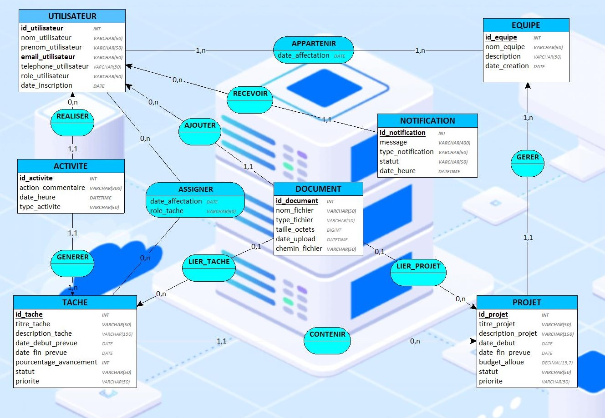

Chapitre 5 Modèle Conceptuel de Données (MCD)
Le MCD (Modèle Conceptuel de Données) est la représentation métier du système : il décrit ce qu’on veut gérer (entités comme Utilisateur, Projet, Tâche, Document…) et comment ces éléments sont liés (associations) avec leurs cardinalités (1..N, 0..N, etc.). À ce stade, on ne parle pas de SQL : l’objectif est de valider que le modèle colle à la réalité du besoin.
L’image suivante présente notre MCD dans le cadre de ce projet.
